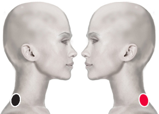

Blastocistis hominis
Pares
cuello - cuello
dorsal 1 - dorsal 1

Generalidades:
Principal causante de Convulsiones y Epilepsias . Buscar su asociación con Bacterias, sobre todo con Estreptococo fragilis (Angulo). Dermatitis. Frecuentemente provoca trastornos digestivos: nausea, anorexia, expasmos abdominales, diarreas, úlceras. Puede favorecer la formación de Timomas (tumores mediastínicos), Puede afectar el plexo braquial y dar sintomatología en miembros superiores.
Transmisión
Se trasmite cuando se encuentra en su forma quística, en forma fecal – oral, a través de agua y alimentos contaminados, contacto con animales infectados: domésticos, silvestres, ganado, en zoológicos, incluso insectos como cucarachas.